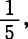
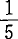

1.买卖时间
资本由商品到货币和由货币到商品的形式转化，同时就是资本家的交易，即买卖行为。资本完成这些形式转化的时间，从主观上，从资本家的观点来看，就是买卖时间，就是他在市场上执行卖者和买者的职能的时间。正像资本的流通时间是资本再生产时间的一个必要部分一样，资本家进行买卖，在市场上奔走的时间，也是他作为资本家即作为人格化的资本执行职能的时间的一个必要部分。这是他的经营时间的一部分。
〔因为我们假定商品按照它们的价值买卖，所以，这些行为只是指同一价值由一种形式转化为另一种形式，即由商品形式转化为货币形式和由货币形式转化为商品形式，只是指一种状态变化。如果商品按照它们的价值出售，买者和卖者手里的价值量都不发生变化；发生变化的只是它的存在形式。如果商品不是按照它们的价值出售，转化了的价值的总额仍旧不变；一方面的增加，就是另一方面的减少。
但是，形态变化W—G和G—W，是买者和卖者之间进行的交易；他们达成交易是需要时间的，尤其是因为在这里进行着斗争，每一方都想占对方的便宜，生意人碰在一起，就像“希腊人遇到希腊人就发生激战”一样。状态的变化花费时间和劳动力，但不是为了创造价值，而是为了使价值由一种形式转化为另一种形式。在这里，事情并不因双方都想借此机会占有超额的价值量而发生变化。这种劳动由于双方的恶意而增大，但并不创造价值，正像花费在诉讼程序上的劳动并不增加诉讼对象的价值量一样。这种劳动对于作为总体的资本主义生产过程来说，即对于包含着流通或被包含在流通中的资本主义生产过程来说，是一个必要的因素，但它同比如说燃烧一种生热用的材料时花费的劳动一样。这种燃烧劳动，虽然是燃烧过程的一个必要的因素，但并不生热。例如，要把煤炭当作燃料来用，我就必须使它同氧气化合，为此，必须使它由固体状态转化为气体状态（因为在燃烧的结果碳酸气中，煤炭处于气体状态），也就是使煤炭的存在形式或状态发生物理变化。在进行新的化合之前，结合为固体的碳分子必须分离，碳分子本身必须分解为单个的原子。这需要消耗一定的能量，这种能量的消耗不转化为热，而是热的一种扣除。因此，如果商品所有者不是资本家，而是独立的直接生产者，那么，买卖所费的时间，就是他们的劳动时间的一种扣除，因而，他们总是（在古代和中世纪）力图把这种事情留到节日去做。
当然，资本家手里的商品交易具有的规模，不会使那种并不创造价值而只是为价值的形式变换作中介的劳动，转化为创造价值的劳动。即使职务转移了，就是说，产业资本家并不亲自从事那种“燃烧劳动”，而把它变为由他们付酬的第三者的专业，也不可能出现这种变体的奇迹。这些第三者当然不是因为爱上资本家的美丽的眼睛而让他们支配自己的劳动力。一个地主的收租人或一个银行的差役的劳动不会使他们所收的租或成袋地运往另一银行的金币增加分毫，这对他们来说也是没有关系的。〕(1)
对于使别人为自己劳动的资本家来说，买卖成了一种主要职能。因为他按巨大的社会的规模占有许多人的产品，所以，他也得按同样的规模出售这些产品，然后重新把货币转化为各种生产要素。和以前一样，买卖时间并不创造价值。错觉是从商人资本的职能产生的。但是，在这里，即使对这个问题不作进一步的考察，事情本来就很清楚：如果一种职能本身是非生产的，然而是再生产的一个必要的因素，现在这种职能由于分工，由多数人的附带工作变为少数人的专门工作，变为他们的特殊行业，那么，这种职能的性质本身并不会改变。一个商人（在这里只是看作商品的形式转化的当事人，只是看作买者和卖者）可以通过他的活动，为许多生产者缩短买卖时间。因此，他可以被看作是一种机器，它能减少力的无益消耗，或有助于腾出生产时间。(2)
为了简便起见（因为我们以后才考察作为资本家的商人和商人资本），我们假定，这种买卖的当事人是出卖自己劳动的人。他在W—G和G—W活动上，耗费自己的劳动力和劳动时间。因此，他以此为生，就像别人靠纺纱或制药丸为生一样。他执行一种必要的职能，因为再生产过程本身包含非生产职能。他和别人一样劳动，不过他的劳动的内容既不创造价值，也不创造产品。他本身属于生产上的非生产费用。他的作用，不是使一种非生产职能转化为生产职能，或使非生产劳动转化为生产劳动。如果这种转化能够通过职能的这种转移来完成，那真是奇迹了。他的作用宁可说是使社会的劳动力和劳动时间只有更少一部分被束缚在这种非生产职能上。不仅如此。我们不妨假定，他只是一个雇佣工人，他的报酬尽可比较优厚。不管他的报酬怎样，他作为一个雇佣工人，总有一部分时间是无偿地劳动的。他也许每天干了10小时而得到8个劳动小时的价值产品。他从事的两小时剩余劳动，和他的8小时必要劳动一样不生产价值，虽然由于这8小时必要劳动，社会产品有一部分转移给他了。第一，和以前一样，从社会的观点看，一个劳动力在10小时内耗费在这个单纯的流通职能上。它不能用于别的目的，不能用于生产劳动。第二，社会对这两小时的剩余劳动没有支付报酬，虽然这种剩余劳动已经由完成这种劳动的这个人耗费了。社会并没有因此占有任何超额的产品或价值。但是，这个人所代表的流通费用减少了由10小时减为8小时。社会对以他为当事人的这一现实的流通时间的，没有支付等价物。但是，既然这个当事人是由资本家使用的，资本家会由于未对这两小时支付报酬而减少他的资本的流通费用，而这种费用是对他的收入的扣除。对资本家来说，这是一种积极的收入，因为他的资本在价值增殖上所受的消极限制缩小了。当独立的小商品生产者把他们的一部分时间耗费在买卖上的时候，这种时间或者只是在他们的生产职能的间歇期间耗费的时间，或者是他们的生产时间的损失。
无论如何，用在买卖上的时间，是一种不会增加转化了的价值的流通费用。这种费用是价值由商品形式转变为货币形式所必要的。如果资本主义的商品生产者是流通当事人，那么，他同直接的商品生产者的区别只是在于，他的买卖规模较大，因而他作为流通当事人执行职能的范围较大。一旦他的营业范围使他必须购买或者能够购买（雇用）作为雇佣工人的他的流通当事人，事情的本质也不会发生变化。劳动力和劳动时间必须以某种程度耗费在流通过程（就它只是形式转化来说）上。但是，现在这种耗费表现为追加的资本支出；可变资本的一部分必须用来购买这种仅仅在流通中执行职能的劳动力。资本的这种预付，既不创造产品，也不创造价值。它相应地缩小预付资本生产地执行职能的范围。这就好像是把产品的一部分转化为一种机器，用来买卖产品的其余部分。这种机器是产品的一种扣除。它虽然能够减少在流通中耗费的劳动力等等，但不参加生产过程。它只是流通费用的一部分。
(1) 括号里的几段采自第Ⅷ稿末尾的一个注。
(2) “商业费用虽属必要，但应看作是一种繁重的负担。”（魁奈《经济表分析》，载于德尔编《重农学派》，1846年巴黎版第1部第71页）——在魁奈看来，商人之间的竞争带来的“利润”，即竞争迫使他们“降低的他们的报酬或收入……严格地说，不外就是直接出售者和消费购买者的损失的减少。但是，无论我们把商业本身简单地看作是与运输费用无关的交换，还是把它看作是和运输费用结合在一起的交换，商业费用损失的减少，并不是现实产品，或者并不是由商业引起的财富的增长”（第145、146页）。“如果没有什么中介费用，商业费用总是由得到买者支付的全部价格的产品出售者负担。”（第163页）“土地所有者和生产者是工资的支付人，商人是工资的领取人。”（魁奈《关于商业和手工业者劳动的问答》，载于德尔编《重农学派》，1846年巴黎版第1部第164页）